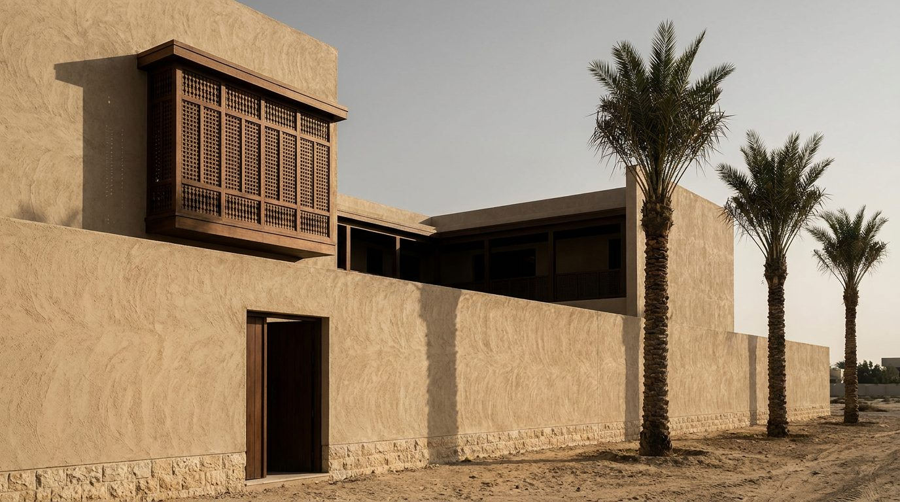
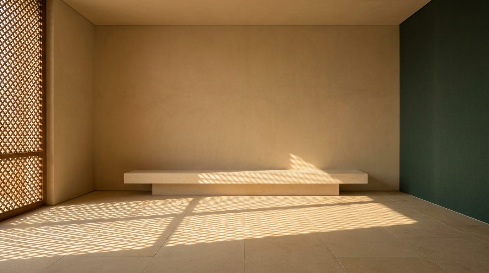

Atlante · INT-AE-02 · Emirati Arabi Uniti · Golfo
Villa con corte interna a Umm Suqeim, pietra locale e mashrabiya
Esempi · esterno e interno


Perché funziona
Negli Emirati il cliente compra privacy e misura, non solo vista: la villa a corte è il tipo che dichiara una famiglia che riceve senza esporsi. Per il catalogo Poetica serve il contraltare esatto del penthouse: stessa geografia, luce opposta, così il prodotto italiano si vede in due condizioni limite. Il made in Italy entra nella giunzione e nella finitura della calce e del teak, non nell'arco decorativo né nel lanternino. Non deve diventare un set da resort con cuscini a stampa e ottoni lucidi: qui il lusso è il muro cieco, il giunto di 2 mm e l'ombra della mashrabiya.
Architettura · elementi riproducibili
- corte 8x8 m su due livelli, soffitto del soggiorno 3,4 m, muro di cinta h 3,0 m sulla strada
- mashrabiya in teak, listelli 40x40 mm a interasse 90 mm, telaio 20 mm, luce netta del vano 2,2 m
- pavimento in pietra calcarea 600x1200 mm, giunto 2 mm, bocciardato, nessun battiscopa
- pareti in calce rasata a mano, spessore finitura 4 mm, due mani, 2% di sheen
- porta-finestra a due ante h 2,4 m, traverso a 2,1 m, profilo in ferro 40 mm
- vela di copertura sulla corte, travi 120x240 mm a interasse 1,2 m, canniccio e calce
- proporzione chiave: corte 8x8 m contro stanze di 4,5 m di luce netta, un solo pieno su quattro lati
Fatto verificato: la mashrabiya è una finestra a sporto chiusa da graticcio di legno intagliato, usata tradizionalmente per captare il vento e per il raffrescamento passivo, con vasi d'acqua per l'evaporazione (Wikipedia, Mashrabiya).
Fatto verificato: Umm Suqeim è una località di Dubai sulla costa di Jumeirah, divisa in tre sub-comunità (Umm Suqeim 1, 2 e 3) che ospitano comunità residenziali abbienti (Wikipedia, Umm Suqeim).
Fatto verificato: il windcatcher (barjeel) è un elemento tradizionale di ventilazione incrociata e raffrescamento passivo diffuso in Nord Africa e in Asia occidentale e meridionale; Egitto, Iran ed Emirati ne rivendicano l'invenzione (Wikipedia, Windcatcher).
Valutazione: la direzione a corte regge come set costruito, non come edificio storico documentato; il contrasto con il penthouse int-ae-01 è massimo per tipologia, direzione della luce e registro, e la mashrabiya è l'unico elemento che lega la villa al Golfo senza folklore.
Luce
Prompt di generazione (EN)
Interior of a contemporary courtyard villa living room in Dubai, empty except for one very low pale limestone bench. Walls in hand-floated lime plaster, sand colour, fully matte; floor in large local limestone slabs with a 2 mm joint; one end wall in deep green-water matte textile. A single key light: late afternoon sun at 35 degrees, 3600 K, passing through a teak mashrabiya screen and laying a soft lattice of shadows across the floor, while the rest of the room falls two stops into warm shadow bounced off the plaster. 28 mm lens, camera at 1.35 m, two-point perspective, verticals perfectly parallel. Grade warm and low in contrast, sand and olive, no blue cast. no people, no text, no logos